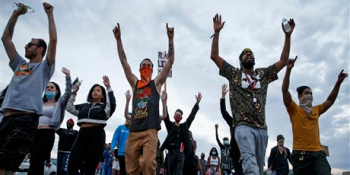
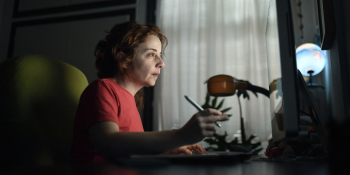
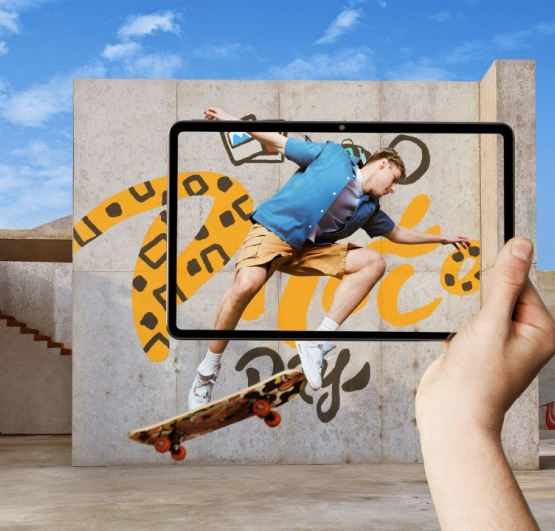

A Midwestern capital is marching for racial justice — and getting results
Outside of the governor’s mansion in Des Moines, Iowa, on Tuesday evening, Dionna Langford spoke to a crowd of hundreds of protesters with a bullhorn. “Black people,” said Langford, 28, who is African American, “if you have been harassed, terrorized, bullied by the police, in this city, make some...
Zambian president pardons gay couple sentenced to 15 years
LUSAKA - Zambia's president has pardoned a gay couple sentenced to 15 years in prison in November under colonial-era sodomy laws in a case that caused a diplomatic row with the United States. Japhet Chataba, 39, and Steven Sambo, 31, were among nearly 3,000 inmates pardoned by...
Colin Powell calls Trump a liar, says he skirts the Constitution...
After a week in which President Donald Trump threatened to use military force against protesters, Colin Powell and other retired military leaders blasted the commander-in-chief for taking steps they say will harm the relationship between the military and U.S. citizens...
Is working from home wearing you out? Do this to avoid burnout
Many of us aren't just working from home, we're panic working. Juggling the demands of work and childcare — amid the stress of living through a pandemic, record unemployment and job insecurity— is weighing on us.According to a recent Monster.com survey, 51% of workers said...

Главные новости

Обзор молодежных планшетов: лучшие устройства за свои деньги
Серия Huawei MediaPad давно известна покупателям - это одни из самых продаваемых Android-планшетов на рынке. Однако в компании решили провести ребрендинг, и модели MediaPad стали частью флагманской линейки Huawei MatePad, получили передовые функции, но при этом сохранили доступную цену. В июне в России появятся два новых планшета: компактный MatePad T8 с диагональю 8 дюймов и MatePad с экраном 10,4 дюйма. Последний уже доступен по предзаказу с завтрашнего числа на сайте бренда. Модель ориентирована на молодых специалистов, студентов, семьи с детьми, которым нужно отличное устройство по привлекательной цене. Давайте разберемся, почему Huawei MatePad является одним из лучших предложений на рынке. Huawei MatePad выполнен из стекловолокна и поликарбоната: для прочности корпус имеет алюминиевую рамку. При диагонали экрана в 10,4 дюйма планшет весит всего 450 г и его толщина составляет 7,35 мм. Для сравнения Huawei MediaPad M5 Lite весил 475 г, его диагональ была меньше - 10,1 дюйма, а толщина составляла 7,7 мм...